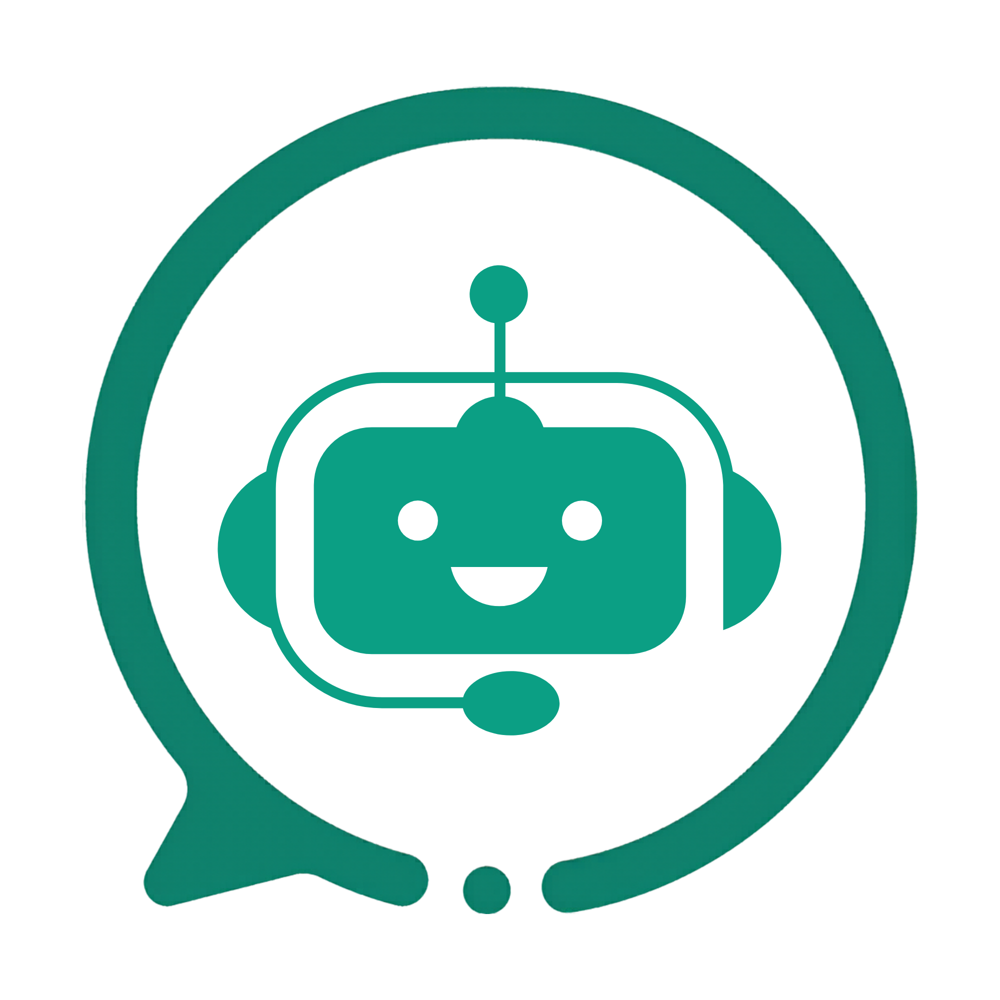

Application desktop qui automatise WhatsApp, génère vos visuels produits et pilote des agents IA multi‑fournisseurs. Vos données restent sur votre machine.
Un logiciel qui lit vos conversations WhatsApp et manipule vos clés d'API n'a aucune raison d'être une boîte noire. Vous ne devriez pas avoir à nous croire sur parole — vous devriez pouvoir vérifier.
Le code publié est celui qui tourne chez nos utilisateurs. Il n'y a pas d'édition « communautaire » amputée d'un côté et d'édition propriétaire de l'autre : c'est le même dépôt.
Installez-le sur autant de postes que vous voulez, sans licence à acheter. Auditez-le, forkez-le, adaptez-le. L'AGPL-3.0 demande une seule contrepartie : si vous redistribuez une version modifiée ou l'exposez comme service en ligne, publiez son code. L'usage interne, même commercial, reste libre.
Une suite complète, pas un chatbot de plus.
Basculez entre Google Gemini, NVIDIA NIM, OpenRouter, Together AI et des modèles locaux via Ollama — sans changer d'outil.
Détection des intentions d'achat et suivi des commandes en temps réel sur WhatsApp Web, via un moteur Playwright / Puppeteer.
Détourage, remplacement d'arrière-plan, retouche par prompt et composition de catalogues à partir de simples photos.
Extraction de leads depuis Google Places, Annuaire CI et GoAfrica, convertis en contacts en un clic.
Publication de produits et d'articles, avec approbation humaine obligatoire : l'IA propose, un administrateur valide.
Suivi des tokens consommés, du coût estimé par modèle et de la latence, fournisseur par fournisseur.
Une passerelle unifiée : vous choisissez le modèle par agent, et vos clés restent les vôtres.
| Fournisseur | Modèles | Usage recommandé |
|---|---|---|
| Google Gemini | Gemini Flash / Pro / Vision | Multimodal, vision produit, réponses rapides |
| NVIDIA NIM | Llama 3.3, Qwen 2.5, Nemotron | Raisonnement complexe, pipelines d'agents |
| OpenRouter | Catalogue multi-fournisseurs | Rédaction experte, code, raisonnement avancé |
| Ollama | Llama 3, Mistral, Phi-3 | Confidentialité totale, 100 % hors-ligne |
| Together AI | Qwen-Image, Flux.1 | Génération d'images produits |
Node.js 20+, npm 9+ et une instance Redis locale.
# 1. Cloner le dépôt
git clone https://github.com/auceps-dev-team/lunar-nova.git
cd lunar-nova/whatsapp-ai-saas
# 2. Installer les dépendances (racine + backend)
npm install
cd backend && npm install && cd ..
# 3. Configurer l'environnement backend
cp backend/.env.example backend/.env
# 4. Lancer Redis (cache et limitation de débit)
docker run -d -p 6379:6379 --name wacopilote-redis redis:alpine
# 5. Démarrer l'application complète
npm run start:allLes clés d'API se saisissent ensuite directement dans les réglages de l'application — aucune n'est obligatoire pour démarrer.
Il n'existe aucun serveur WaCopilote qui collecte vos conversations. Tout est local — et voici précisément ce qui le protège.
127.0.0.1 et exige un token d'authentification
généré à l'installation.contextIsolation activé, nodeIntegration
désactivé) et n'expose qu'une liste explicite de fonctions.Ce qui n'est pas encore fait. Les clés d'API et les mots de passe d'application WordPress sont encore stockés en clair dans la base SQLite locale. Le chiffrement au repos est la prochaine priorité, et c'est écrit noir sur blanc dans le README plutôt que passé sous silence.
WaCopilote est né comme un produit interne et en porte encore les traces.
La couverture de tests est aujourd'hui quasi nulle, plusieurs pages dépassent 800 lignes et certains modules méritent une refonte. Nous ouvrons le code avec ces défauts visibles plutôt que de retarder la publication le temps de faire le ménage.
C'est aussi ce qui rend la contribution utile tout de suite : les zones prioritaires sont les parseurs de scraping, les adaptateurs LLM et les migrations de schéma — précisément ce qui casse en production.